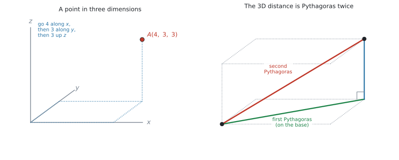
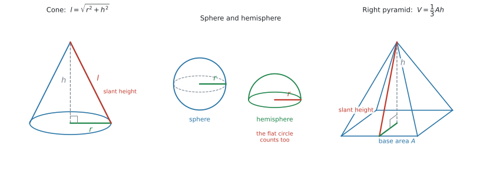
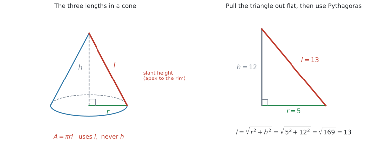
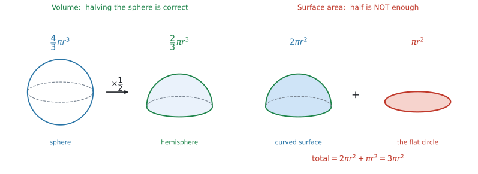
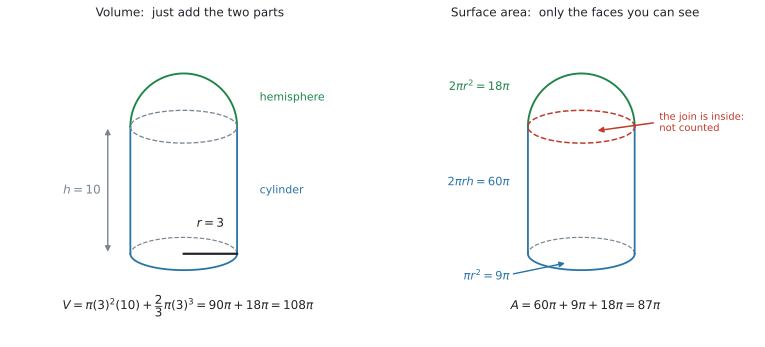
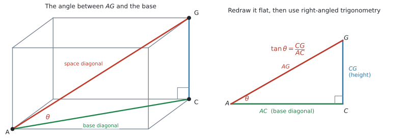

SL 3.1 — Three-dimensional geometry（空間図形 — 距離・体積・表面積・角）
- 空間の2点の距離と midpoint を、公式集の式で求められる。
- 右錐・円錐・球・半球の体積と表面積を求められる。
- それらを組み合わせた立体の体積と表面積を求められる。
- 円錐の slant height を Pythagoras で出せる。
- 立体の中から直角三角形を見つけて、辺の長さと角を求められる。
- 直線と平面のなす角が何なのかを説明できる。
この項目は、公式集の分量が一番多い項目です。SL 3.1 の欄に、次の5つがあります。
\[ d = \sqrt{(x_1 - x_2)^{2} + (y_1 - y_2)^{2} + (z_1 - z_2)^{2}} \]
\[ \text{midpoint} = \left( \frac{x_1 + x_2}{2},\ \frac{y_1 + y_2}{2},\ \frac{z_1 + z_2}{2} \right) \]
\[ V_{\text{pyramid}} = \frac{1}{3}Ah, \qquad V_{\text{cone}} = \frac{1}{3}\pi r^{2} h, \qquad A_{\text{cone, curved}} = \pi r l \]
\[ V_{\text{sphere}} = \frac{4}{3}\pi r^{3}, \qquad A_{\text{sphere}} = 4\pi r^{2} \]
さらに Prior learning の欄にも、次のものが印刷されています。
\[ V_{\text{cuboid}} = lwh, \qquad V_{\text{cylinder}} = \pi r^{2} h \]
\[ V_{\text{prism}} = Ah, \qquad A_{\text{cylinder, curved}} = 2\pi r h \]
\[ A_{\text{circle}} = \pi r^{2}, \qquad C = 2\pi r \]
\[ A_{\text{triangle}} = \frac{1}{2}bh, \qquad A_{\text{trapezoid}} = \frac{1}{2}(a + b)h \]
配られるので、覚える必要はありません。 覚えるべきなのは、どの立体にどれを使うかです。
ここが、この項目で一番落とすところです。
- hemisphere（半球）の公式はありません。 球の式を自分で半分にします。
- 円錐・円柱の「全表面積」はありません。 載っているのは curved surface（側面）だけです。底の円は自分で足します。
- Pythagoras の定理はありません。 円錐の \(l\)（slant height）を出すときに必ず使うので、これは知っている前提です。
\[ l = \sqrt{r^{2} + h^{2}} \]
Topic 3 は角度を扱う topic です。AI SL では degree（度）が中心で、シラバスの SL 3.4 に Radians are not required at SL とはっきり書かれています。
ctrl + doc → Document Settings → Angle: DegreePress-to-Test で始めた直後は Degree になっています。そのままで構いません。
The idea
1. 空間の座標
平面では \((x,\ y)\) の2つでしたが、空間ではもう1つ、高さを表す \(z\) が加わります。

図 1 の左のように、\(x\) 方向に進み、\(y\) 方向に進み、最後に \(z\) 方向に上がると、その点に着きます。
2. 距離と midpoint
公式集の式は、平面のときの式に \(z\) の項が1つ増えただけです。
\[ d = \sqrt{(x_1 - x_2)^{2} + (y_1 - y_2)^{2} + (z_1 - z_2)^{2}} \tag{1}\]
\[ \text{midpoint} = \left( \frac{x_1 + x_2}{2},\ \frac{y_1 + y_2}{2},\ \frac{z_1 + z_2}{2} \right) \tag{2}\]
引き算の向きは、どちらでも構いません
\((x_1 - x_2)\) でも \((x_2 - x_1)\) でも、2乗すると同じになります。ですから、どちらから引いても答えは変わりません。
\[ (2 - 6)^{2} = (-4)^{2} = 16, \qquad (6 - 2)^{2} = 4^{2} = 16 \]
距離は引き算、midpoint は足し算です。
\[ \text{midpoint の } x = \frac{x_1 + x_2}{2} \]
ここで引き算をしてしまう誤りが、とても多いです。符号を1つ間違えるだけで、全部ずれます。
3. 立体の体積と表面積
シラバスが名指ししている立体は、これだけです。
Volume and surface area of three-dimensional solids including right-pyramid, right cone, sphere, hemisphere and combinations of these solids.

| 立体 | 体積 | 表面積 |
|---|---|---|
| cuboid（直方体） | \(lwh\) | 6つの長方形を足す |
| prism（角柱） | \(Ah\) | 2つの底面 ＋ 側面 |
| cylinder（円柱） | \(\pi r^{2} h\) | \(2\pi r h + 2\pi r^{2}\)（公式集になし） |
| right pyramid（角錐） | \(\dfrac{1}{3}Ah\) | 底面 ＋ 三角形の側面 |
| right cone（円錐） | \(\dfrac{1}{3}\pi r^{2} h\) | \(\pi r l + \pi r^{2}\)（公式集になし） |
| sphere（球） | \(\dfrac{4}{3}\pi r^{3}\) | \(4\pi r^{2}\) |
| hemisphere（半球） | \(\dfrac{2}{3}\pi r^{3}\)（公式集になし） | \(2\pi r^{2} + \pi r^{2} = 3\pi r^{2}\)（公式集になし） |
円錐の slant height

公式集の \(A = \pi r l\) の \(l\) は、高さ \(h\) ではありません。 頂点から底の円のふちまでの、斜めの長さです（図 3 左）。
\(r\)、\(h\)、\(l\) は直角三角形をつくるので、Pythagoras で出します。
\[ l = \sqrt{r^{2} + h^{2}} \tag{3}\]
\(r = 5\)、\(h = 12\) なら \(l = \sqrt{25 + 144} = \sqrt{169} = 13\) です。
問題文が \(h\) を与えていたら、まず \(l\) を出すところから始まります。
hemisphere

半球は、球を半分にしたものです。体積は半分でよいのですが、表面積は半分では足りません。
| 求め方 | 式 | |
|---|---|---|
| 体積 | 球の半分 | \(\dfrac{1}{2} \times \dfrac{4}{3}\pi r^{3} = \dfrac{2}{3}\pi r^{3}\) |
| 曲面だけ | 球の表面積の半分 | \(\dfrac{1}{2} \times 4\pi r^{2} = 2\pi r^{2}\) |
| 全表面積 | 曲面 ＋ 切り口の円 | \(2\pi r^{2} + \pi r^{2} = 3\pi r^{2}\) |
ここで一番大事なのは、切り口の平らな円を忘れないことです（図 4 右）。
組み合わせた立体
シラバスの combinations of these solids です。円柱の上に半球、円柱の上に円錐、といった形が出ます。
いちばんよく出る「円柱の上に半球」で見ておきます。半径 \(3\) cm、高さ \(10\) cm の円柱に、半径 \(3\) cm の半球をのせた立体です。

体積は2つ足すだけですが、表面積では、くっついた円（図 5 右の赤い点線）が消えます。 ここが違いです。
| やること | |
|---|---|
| 体積 | それぞれの体積を足す |
| 表面積 | 外から見える面だけを足す |
円柱の上に半球をのせたとき、触れ合っている円は外から見えません（図 5 右）。ですから、表面積に入れません。
数えるのは
- 円柱の側面 \(2\pi r h\)
- 円柱の下の底面 \(\pi r^{2}\)
- 半球の曲面 \(2\pi r^{2}\)
の3つです。「下の底面は数えるが、真ん中の円は数えない」と覚えてください。
4. 立体の中の角度
シラバスの Guidance 欄に、SL の範囲がはっきり書かれています。
In SL examinations, only right-angled trigonometry questions will be set in reference to three-dimensional shapes.
… students should be able to identify relevant right-angled triangles in three-dimensional objects and use them to find unknown lengths and angles.
やることは、直角三角形を1つ見つけることだけです。

手順は3つです
- 求める角をはさむ2辺を含む三角形を探す
- その三角形を、紙の上に平らにかき直す（図 6 右）
- その三角形で、Pythagoras か \(\sin/\cos/\tan\) を使う
2 が一番大事です。 立体のままでは角の大きさが正しく見えないので、必ず取り出してかき直してください。
直線と平面のなす角
「線と平面のなす角」は、その線を平面に落とした影との角です。
図 6 では、\(AG\)（空間の対角線）と底面のなす角を聞かれています。\(AG\) の影は \(AC\)（底面の対角線）なので、求めるのは \(\angle GAC\) です。
\(\angle GCA\) が直角なので、この三角形で
\[ \tan\theta = \frac{CG}{AC} \]
が使えます。
この項目では、直角三角形が見つかったあとの計算に使うだけです。使い方をきちんと見るのは、次の SL 3.2 です。
いま必要なのは、この3つだけです。
\[ \sin\theta = \frac{\text{opposite}}{\text{hypotenuse}}, \qquad \cos\theta = \frac{\text{adjacent}}{\text{hypotenuse}}, \qquad \tan\theta = \frac{\text{opposite}}{\text{adjacent}} \]
角を求めるときは、電卓で \(\tan^{-1}\)（ctrl + tan）を使います。
Why it works
ここでは、なぜ空間の距離が 式 1 になるのかだけを説明します。
図 1 の右を見てください。原点から点 \(B\) までの距離を、2段階で出します。
1回目は、床の上です。\(x\) 方向に \(5\)、\(y\) 方向に \(3.4\) 進んだ点までの距離は、平面の Pythagoras で
\[ (\text{床の対角線})^{2} = 5^{2} + 3.4^{2} \]
2回目は、そこから真上に上がるところです。床の対角線と、上に伸びる辺は直角なので、もう一度 Pythagoras が使えます。
\[ d^{2} = (\text{床の対角線})^{2} + (\text{高さ})^{2} = 5^{2} + 3.4^{2} + 2.8^{2} \]
Pythagoras を2回続けて使うと、\(z\) の項が1つ増えるだけになります。これが \(\sqrt{\ }\) の中に3つ並んでいる理由です。
Worked examples
問題文は英語です。意味が理解できなかったら、問題文の下の「日本語訳」を開いてください。解説は日本語です。
例題 1 Two points are given by \(A(2,\ -1,\ 4)\) and \(B(6,\ 3,\ -2)\).
(a) Find the distance \(AB\), correct to three significant figures.
(b) Find the coordinates of the midpoint of \(AB\).
日本語訳
\(2\) つの点が \(A(2,\ -1,\ 4)\)、\(B(6,\ 3,\ -2)\) で与えられています。
(a) 距離 \(AB\) を有効数字3桁で求めなさい。
(b) \(AB\) の中点の座標を求めなさい。
(a) 公式集の式に入れます。引き算を3つ、先に済ませてから2乗すると、間違いが減ります。
\[ x: 2 - 6 = -4, \qquad y: -1 - 3 = -4, \qquad z: 4 - (-2) = 6 \]
\(z\) の引き算に注意してください。\(4 - (-2) = 4 + 2 = 6\) です。
\[ d = \sqrt{(-4)^{2} + (-4)^{2} + 6^{2}} = \sqrt{16 + 16 + 36} \]
\[ = \sqrt{68} = 8.246\ldots \]
有効数字3桁で \(8.25\) です。
(b) midpoint は足して2で割ります。
\[ \left( \frac{2 + 6}{2},\ \frac{-1 + 3}{2},\ \frac{4 + (-2)}{2} \right) = (4,\ 1,\ 1) \]
(a) \(d = \sqrt{(2 - 6)^{2} + (-1 - 3)^{2} + (4 + 2)^{2}} = \sqrt{68} = 8.25\) (3 s.f.)
(b) \(\left( \dfrac{2 + 6}{2},\ \dfrac{-1 + 3}{2},\ \dfrac{4 - 2}{2} \right) = (4,\ 1,\ 1)\)
例題 2 A solid cone has a radius of 5 cm and a vertical height of 12 cm.
(a) Find the slant height of the cone.
(b) Find the volume of the cone, correct to three significant figures.
(c) Find the area of the curved surface of the cone, correct to three significant figures.
(d) Find the total surface area of the cone, correct to three significant figures.
日本語訳
ある中身の詰まった円錐の半径は \(5\) cm、垂直の高さは \(12\) cm です。
(a) 円錐の母線の長さを求めなさい。
(b) 円錐の体積を有効数字3桁で求めなさい。
(c) 円錐の側面積を有効数字3桁で求めなさい。
(d) 円錐の全表面積を有効数字3桁で求めなさい。
(a) slant height は、\(r\) と \(h\) を2辺とする直角三角形の斜辺です。
\[ l = \sqrt{5^{2} + 12^{2}} = \sqrt{169} = 13 \]
\(13\) cm です。
(b) 公式集の \(V = \dfrac{1}{3}\pi r^{2} h\) に入れます。ここで使うのは \(h = 12\)、\(l\) ではありません。
\[ V = \frac{1}{3}\pi (5)^{2}(12) = 100\pi = 314.15\ldots \]
有効数字3桁で \(314\) cm\(^{3}\) です。
(c) curved surface は \(A = \pi r l\)。ここで使うのは \(l = 13\)、\(h\) ではありません。
\[ A = \pi (5)(13) = 65\pi = 204.20\ldots \]
有効数字3桁で \(204\) cm\(^{2}\) です。
(d) total surface area は公式集にありません。底の円を自分で足します。
\[ A_{\text{total}} = \underbrace{65\pi}_{\text{curved}} + \underbrace{\pi(5)^{2}}_{\text{base}} = 65\pi + 25\pi = 90\pi = 282.74\ldots \]
有効数字3桁で \(283\) cm\(^{2}\) です。
(c) と (d) の違いが、この項目の一番の分かれ目です。 問題文が curved と言っているか total と言っているかを、必ず読んでください。
(a) \(l = \sqrt{5^{2} + 12^{2}} = 13\) cm
(b) \(V = \dfrac{1}{3}\pi(5)^{2}(12) = 100\pi = 314\) cm\(^{3}\) (3 s.f.)
(c) \(A = \pi(5)(13) = 65\pi = 204\) cm\(^{2}\) (3 s.f.)
(d) \(A = 65\pi + \pi(5)^{2} = 90\pi = 283\) cm\(^{2}\) (3 s.f.)
例題 3 A solid is made from a cylinder of radius 3 cm and height 10 cm, with a hemisphere of radius 3 cm attached to the top.
(a) Find the volume of the solid, correct to three significant figures.
(b) Find the total surface area of the solid, correct to three significant figures.
日本語訳
半径 \(3\) cm、高さ \(10\) cm の円柱の上に、半径 \(3\) cm の半球をくっつけた立体があります。
(a) この立体の体積を有効数字3桁で求めなさい。
(b) この立体の全表面積を有効数字3桁で求めなさい。
図 5 と同じ立体です。
(a) 体積は、そのまま足します。
\[ V_{\text{cylinder}} = \pi (3)^{2}(10) = 90\pi \]
\[ V_{\text{hemisphere}} = \frac{1}{2} \times \frac{4}{3}\pi (3)^{3} = \frac{2}{3}\pi (27) = 18\pi \]
\[ V = 90\pi + 18\pi = 108\pi = 339.29\ldots \]
有効数字3桁で \(339\) cm\(^{3}\) です。
(b) 表面積は、外から見える面だけです。何が見えているかを、先に3つ書き出します。
- 円柱の側面 \(\quad 2\pi(3)(10) = 60\pi\)
- 円柱の下の底面 \(\quad \pi(3)^{2} = 9\pi\)
- 半球の曲面 \(\quad \dfrac{1}{2} \times 4\pi(3)^{2} = 18\pi\)
\[ A = 60\pi + 9\pi + 18\pi = 87\pi = 273.31\ldots \]
有効数字3桁で \(273\) cm\(^{2}\) です。
円柱の上の円と、半球の切り口の円は、くっついていて見えません。 ですから数えません。
(a) \(V = \pi(3)^{2}(10) + \dfrac{1}{2} \times \dfrac{4}{3}\pi(3)^{3} = 90\pi + 18\pi = 108\pi = 339\) cm\(^{3}\) (3 s.f.)
(b) \(A = 2\pi(3)(10) + \pi(3)^{2} + \dfrac{1}{2} \times 4\pi(3)^{2} = 60\pi + 9\pi + 18\pi = 87\pi = 273\) cm\(^{2}\) (3 s.f.)
例題 4 A cuboid \(ABCDEFGH\) has \(AB = 8\) cm, \(BC = 6\) cm and \(CG = 5\) cm, where \(ABCD\) is the base and \(CG\) is vertical.
(a) Find the length of the base diagonal \(AC\).
(b) Find the length of the space diagonal \(AG\), correct to three significant figures.
(c) Find the size of the angle between \(AG\) and the base \(ABCD\), correct to three significant figures.
日本語訳
直方体 \(ABCDEFGH\) で、\(AB = 8\) cm、\(BC = 6\) cm、\(CG = 5\) cm です。\(ABCD\) が底面で、\(CG\) は垂直です。
(a) 底面の対角線 \(AC\) の長さを求めなさい。
(b) 空間の対角線 \(AG\) の長さを有効数字3桁で求めなさい。
(c) \(AG\) と底面 \(ABCD\) のなす角の大きさを、有効数字3桁で求めなさい。
(a) \(AC\) は、底面の長方形の対角線です。\(\angle ABC\) は直角なので、Pythagoras が使えます。
\[ AC = \sqrt{8^{2} + 6^{2}} = \sqrt{100} = 10 \]
\(10\) cm です。
(b) 1回目の Pythagoras で出した \(AC\) を使って、もう1回です。\(\angle ACG\) は直角です。
\[ AG = \sqrt{10^{2} + 5^{2}} = \sqrt{125} = 11.18\ldots \]
有効数字3桁で \(11.2\) cm です。
(c) \(AG\) の影は \(AC\) なので、求めるのは \(\angle GAC\) です。
三角形 \(ACG\) を取り出してかき直します（図 6 右）。\(\angle ACG = 90^\circ\) で、
- \(\theta\) の向かいが \(CG = 5\)
- \(\theta\) のとなりが \(AC = 10\)
なので \(\tan\) です。
\[ \tan\theta = \frac{5}{10} = 0.5 \ \Rightarrow \ \theta = \tan^{-1}(0.5) = 26.56\ldots^\circ \]
有効数字3桁で \(26.6^\circ\) です。
検算。 \(AG = 11.18\) を使って \(\sin\theta = \dfrac{5}{11.18} = 0.4472\)、\(\theta = 26.57^\circ\) ✓ 同じ角が出ました。
(a) \(AC = \sqrt{8^{2} + 6^{2}} = 10\) cm
(b) \(AG = \sqrt{10^{2} + 5^{2}} = \sqrt{125} = 11.2\) cm (3 s.f.)
(c) In triangle \(ACG\), angle \(ACG = 90^\circ\).
\(\tan\theta = \dfrac{CG}{AC} = \dfrac{5}{10}\), so \(\theta = 26.6^\circ\) (3 s.f.)
例題 5 A right pyramid has a square base of side 10 cm and a vertical height of 12 cm.
(a) Find the volume of the pyramid.
(b) Find the length of a slant edge of the pyramid, correct to three significant figures.
(c) Find the size of the angle between a slant edge and the base, correct to three significant figures.
日本語訳
ある正四角錐の底面は1辺 \(10\) cm の正方形で、垂直の高さは \(12\) cm です。
(a) この角錐の体積を求めなさい。
(b) この角錐の側稜（頂点と底面の角を結ぶ辺）の長さを、有効数字3桁で求めなさい。
(c) 側稜と底面のなす角の大きさを、有効数字3桁で求めなさい。
(a) 公式集の \(V = \dfrac{1}{3}Ah\) です。\(A\) は底面積なので、\(10 \times 10 = 100\)。
\[ V = \frac{1}{3}(100)(12) = 400 \]
\(400\) cm\(^{3}\) です。
(b) slant edge（側稜）は、頂点から底面の角までの辺です。
底面の中心から角までの長さが要ります。底面の対角線は \(\sqrt{10^{2} + 10^{2}} = 10\sqrt{2}\) なので、その半分は
\[ \frac{10\sqrt{2}}{2} = 5\sqrt{2} = 7.071\ldots \]
高さ \(12\) とこの \(5\sqrt{2}\) が直角をはさむので、
\[ \text{slant edge} = \sqrt{(5\sqrt{2})^{2} + 12^{2}} = \sqrt{50 + 144} \]
\[ = \sqrt{194} = 13.92\ldots \]
有効数字3桁で \(13.9\) cm です。
(c) 同じ直角三角形を使います。\(\theta\) の向かいが \(12\)、となりが \(5\sqrt{2}\) です。
\[ \tan\theta = \frac{12}{5\sqrt{2}} = 1.697\ldots \ \Rightarrow \ \theta = 59.49\ldots^\circ \]
有効数字3桁で \(59.5^\circ\) です。
- 側稜（角まで）に使うのは、対角線の半分 \(5\sqrt{2} = 7.07\)
- 側面の三角形の高さ（辺の中点まで）に使うのは、\(1\) 辺の半分 \(5\)
\(\sqrt{5^{2} + 12^{2}} = 13\) と \(\sqrt{(5\sqrt{2})^{2} + 12^{2}} = 13.9\) で、違う答えになります。 どちらを聞かれているのか、図をかいて確かめてください。
(a) \(V = \dfrac{1}{3}(10 \times 10)(12) = 400\) cm\(^{3}\)
(b) Half the base diagonal \(= \dfrac{\sqrt{10^{2} + 10^{2}}}{2} = 5\sqrt{2}\)
slant edge \(= \sqrt{(5\sqrt{2})^{2} + 12^{2}} = \sqrt{194} = 13.9\) cm (3 s.f.)
(c) \(\tan\theta = \dfrac{12}{5\sqrt{2}}\), so \(\theta = 59.5^\circ\) (3 s.f.)
Common errors
\(l\) は slant height（母線）で、\(h\) ではありません。
\[ l = \sqrt{r^{2} + h^{2}} \]
問題文が \(h\) を与えていたら、まず \(l\) を出すという順番を、体に入れてください。
total surface area で、底の円を足し忘れる
公式集の \(\pi r l\) も \(2\pi r h\) も、側面だけです。
- 円錐の全表面積 \(= \pi r l + \pi r^{2}\)
- 円柱の全表面積 \(= 2\pi r h + 2\pi r^{2}\)（底が2つ）
問題文の curved と total を、必ず読み分けてください。
曲面は半分（\(2\pi r^{2}\)）で合っていますが、切り口の円 \(\pi r^{2}\) が残っています。
\[ A_{\text{hemisphere, total}} = 2\pi r^{2} + \pi r^{2} = 3\pi r^{2} \]
ただし、何かの上にのっているときは切り口が見えないので、\(2\pi r^{2}\) だけです。どちらなのかは、図で決まります。
体積は足すだけですが、表面積は「外から見える面」だけです。
数える前に、見えている面を箇条書きにする習慣を付けてください。\(3\) つか \(4\) つ書き出せば、数え間違いはほぼなくなります。
距離は引き算、midpoint は足し算です。
\[ \frac{x_1 + x_2}{2} \]
\(z\) 座標が負のときに、特に間違えやすくなります。\(\dfrac{4 + (-2)}{2} = 1\) です。
立体の絵の中では、直角が直角に見えません。 角の大きさも、見た目とは違います。
必ず三角形を取り出して、平らにかき直してから計算してください（図 6）。
- 頂点と底面の角を結ぶ → 対角線の半分
- 頂点と底面の辺の中点を結ぶ → 辺の半分
図をかいて、どこからどこまでの長さなのかを確かめてください。
\(100\pi\) のまま計算を進めて、最後の1回だけ電卓で数にしてください（電卓の画面に \(314.159\ldots\) と出る機種でも、その値をそのまま使えば同じことです → 3.）。
途中で \(314\) にすると、その先の足し算で誤差が積み重なります。
Using your GDC (TI-Nspire CX II)
1. 角の設定を確かめる
ctrl + doc → Document Settings → Angle: DegreeTopic 3 では、これを最初に確かめてください。 Radian になっていると、\(\tan^{-1}\) の答えがまったく違う数で出ます。
\(26.6\) と出るはずが \(0.464\) と出たら、Radian になっています。
2. \(\tan^{-1}\) で角を出す
ctrl + tan → tan⁻¹(0.5) → 26.56505...sin⁻¹ は ctrl + sin、cos⁻¹ は ctrl + cos です。
\(\theta = 26.56505\ldots\) を \(26.6\) にしてから次の計算に使うと、答えがずれます。
画面に出たまま次の式に使うか、ctrl + var で変数に入れてください（SL 2.6）。
3. \(\pi\) が画面に残るかどうかは、機種によります
\(\pi\) を入れて計算したとき、\(100\pi\) の形のまま残る機種と、小数になる機種があります。
(1/3) * π * 5^2 * 12 → 100·π （残る機種）
→ 314.159... （残らない機種）TI の資料では、電卓の計算モードが3つに分かれています。
| 計算モード | 残るもの |
|---|---|
| Numeric | 小数、整数、分数だけ |
| Exact Arithmetic | 上に加えて \(\pi\)、\(e\)、\(\sqrt{\ }\) など |
| CAS | 上に加えて文字式の変形 |
| 機種 | \(\pi\) は残る？ |
|---|---|
| TI-Nspire CX II（非CAS） | 残りません（Numeric のみ） |
| TI-Nspire CX II-T（非CAS） | 残ります（Exact Arithmetic あり） |
| TI-Nspire CX II CAS / CX II-T CAS | 残ります |
自分の電卓の確かめ方は、これだけです。
π * 5^2 → 25·π 残る機種
→ 78.5398... 残らない機種分数はどの機種でも残ります。 \(\dfrac{94}{31}\) のような形が出たら、ctrl + enter で押し直すと小数になります。残らないのは \(\pi\) と \(\sqrt{\ }\) だけです。
\(100\pi\) の形で持ち歩けなくても、画面に出た \(314.159\ldots\) をそのまま次の式に使えば、精度は落ちません。
やってはいけないのは、\(314\) と書き写してから使うことです。画面の値をそのまま使うか、ctrl + var で変数に入れてください。
答案には \(100\pi\) と書いておいて、最後の1回だけ電卓で数にする ── これがいちばん安全です。
4. 平方根は、そのまま入れてよい
√(8^2 + 6^2) → 10
√(5^2 + 12^2) → 13\(\sqrt{\ }\) は ctrl + x² です。\(\sqrt{194}\) のように割り切れない値は、そのまま次の計算に使ってください。
\(\pi\) と同じで、\(\sqrt{194}\) の形のまま残るかどうかも機種によります。\(13.928\ldots\) と小数で出る機種でも、その値をそのまま次の式に使えば同じ答えになります。
5. 立体の問題では、電卓より先に図をかく
この項目は、電卓の操作より「どの三角形を使うか」で差がつきます。
1. 立体の絵をかき、分かっている長さを全部書き込む
2. 求める角・長さを含む三角形を、横に取り出してかく
3. そこで初めて電卓を使う2 を飛ばすと、たいてい間違えます。
Exercises
各問題に、折りたたみが3つ付いています。日本語訳、解答例（答案用紙に書くべきこと。英語です）、解説（なぜそうなるか。日本語です）。
まず自分で解いて、次に解答例と見くらべてください。解説は、合わなかったときだけ開けば十分です。
1 Two points are given by \(P(1,\ 5,\ -3)\) and \(Q(7,\ -1,\ 3)\).
(a) Find the distance \(PQ\), correct to three significant figures.
(b) Find the coordinates of the midpoint of \(PQ\).
日本語訳
\(2\) つの点が \(P(1,\ 5,\ -3)\)、\(Q(7,\ -1,\ 3)\) で与えられています。
(a) 距離 \(PQ\) を有効数字3桁で求めなさい。
(b) \(PQ\) の中点の座標を求めなさい。
(a) \(PQ = \sqrt{(1 - 7)^{2} + (5 + 1)^{2} + (-3 - 3)^{2}} = \sqrt{108} = 10.4\) (3 s.f.)
(b) \(\left( \dfrac{1 + 7}{2},\ \dfrac{5 - 1}{2},\ \dfrac{-3 + 3}{2} \right) = (4,\ 2,\ 0)\)
引き算を3つ先に済ませます。 \(1 - 7 = -6\)、\(5 - (-1) = 6\)、\(-3 - 3 = -6\)。どれも2乗すると \(36\) なので、\(\sqrt{108}\) です。
(b) は足し算です。\(z\) が \(\dfrac{-3 + 3}{2} = 0\) になるのは、\(2\) 点が \(z = 0\) の平面をはさんで対称にあるからです。
2 A solid cone has a radius of 9 cm and a vertical height of 12 cm.
(a) Find the slant height of the cone.
(b) Find the volume of the cone, correct to three significant figures.
(c) Find the total surface area of the cone, correct to three significant figures.
日本語訳
ある中身の詰まった円錐の半径は \(9\) cm、垂直の高さは \(12\) cm です。
(a) 母線の長さを求めなさい。
(b) 体積を有効数字3桁で求めなさい。
(c) 全表面積を有効数字3桁で求めなさい。
(a) \(l = \sqrt{9^{2} + 12^{2}} = \sqrt{225} = 15\) cm
(b) \(V = \dfrac{1}{3}\pi(9)^{2}(12) = 324\pi = 1020\) cm\(^{3}\) (3 s.f.)
(c) \(A = \pi(9)(15) + \pi(9)^{2} = 135\pi + 81\pi = 216\pi = 679\) cm\(^{2}\) (3 s.f.)
\(9\)、\(12\)、\(15\) は \(3\)、\(4\)、\(5\) を \(3\) 倍したものです。\(\sqrt{\ }\) の中がきれいな数になったら、たいてい合っています。
(b) で使うのは \(h = 12\)、(c) の \(\pi r l\) で使うのは \(l = 15\) です。ここを取り違えるのが一番多い誤りです。
(c) は total なので、底の円 \(\pi(9)^{2} = 81\pi\) を足します。\(1017.8\ldots\) は有効数字3桁で \(1020\) です。
3 A sphere has a radius of 7 cm.
(a) Find the volume of the sphere, correct to three significant figures.
(b) Find the surface area of the sphere, correct to three significant figures.
日本語訳
ある球の半径は \(7\) cm です。
(a) 球の体積を有効数字3桁で求めなさい。
(b) 球の表面積を有効数字3桁で求めなさい。
(a) \(V = \dfrac{4}{3}\pi(7)^{3} = \dfrac{1372}{3}\pi = 1440\) cm\(^{3}\) (3 s.f.)
(b) \(A = 4\pi(7)^{2} = 196\pi = 616\) cm\(^{2}\) (3 s.f.)
球は、公式集の式をそのまま使うだけです。\(r\) を3乗するのか2乗するのかだけ確かめてください。
体積は \(r^{3}\)（\(343\)）、表面積は \(r^{2}\)（\(49\)）です。\(1436.7\ldots\) は有効数字3桁で \(1440\) になります。
4 A solid hemisphere has a radius of 6 cm.
(a) Find the volume of the hemisphere, correct to three significant figures.
(b) Find the total surface area of the hemisphere, correct to three significant figures.
日本語訳
ある中身の詰まった半球の半径は \(6\) cm です。
(a) 半球の体積を有効数字3桁で求めなさい。
(b) 半球の全表面積を有効数字3桁で求めなさい。
(a) \(V = \dfrac{1}{2} \times \dfrac{4}{3}\pi(6)^{3} = 144\pi = 452\) cm\(^{3}\) (3 s.f.)
(b) \(A = \dfrac{1}{2} \times 4\pi(6)^{2} + \pi(6)^{2} = 72\pi + 36\pi = 108\pi = 339\) cm\(^{2}\) (3 s.f.)
(a) は球の体積の半分です。\(\dfrac{4}{3}\pi(216) = 288\pi\) の半分で \(144\pi\)。
(b) 曲面だけでは足りません。 「solid hemisphere（中身の詰まった半球）」なので、平らな切り口も外から見えています。
\[ \underbrace{72\pi}_{\text{曲面}} + \underbrace{36\pi}_{\text{切り口の円}} = 108\pi \]
もしこの半球が何かの上にのっていたら、切り口は見えないので \(72\pi\) だけになります。
5 A cuboid has a base measuring 12 cm by 5 cm, and a vertical height of 9 cm.
(a) Find the length of a diagonal of the base.
(b) Find the length of a space diagonal of the cuboid, correct to three significant figures.
(c) Find the size of the angle between a space diagonal and the base, correct to three significant figures.
日本語訳
ある直方体の底面は \(12\) cm × \(5\) cm で、垂直の高さは \(9\) cm です。
(a) 底面の対角線の長さを求めなさい。
(b) 直方体の空間の対角線の長さを、有効数字3桁で求めなさい。
(c) 空間の対角線と底面のなす角の大きさを、有効数字3桁で求めなさい。
(a) \(\sqrt{12^{2} + 5^{2}} = \sqrt{169} = 13\) cm
(b) \(\sqrt{13^{2} + 9^{2}} = \sqrt{250} = 15.8\) cm (3 s.f.)
(c) \(\tan\theta = \dfrac{9}{13}\), so \(\theta = 34.7^\circ\) (3 s.f.)
\(12\)、\(5\)、\(13\) は Pythagoras の組です。
(b) は、(a) で出した \(13\) を1辺としてもう一度 Pythagoras です（図 1 右）。\(12^{2} + 5^{2} + 9^{2} = 250\) と一度に計算しても同じです。
(c) の角は、空間の対角線と、その影である底面の対角線のあいだの角です。向かいが \(9\)、となりが \(13\) なので \(\tan\) を使います。
6 A right pyramid has a square base of side 8 cm and a vertical height of 3 cm.
(a) Find the volume of the pyramid.
(b) Find the height of one of the triangular faces, measured from the midpoint of a base edge.
(c) Find the total surface area of the pyramid.
日本語訳
ある正四角錐の底面は1辺 \(8\) cm の正方形で、垂直の高さは \(3\) cm です。
(a) 体積を求めなさい。
(b) 側面の三角形の高さ（底辺の中点から測ったもの）を求めなさい。
(c) 全表面積を求めなさい。
(a) \(V = \dfrac{1}{3}(8 \times 8)(3) = 64\) cm\(^{3}\)
(b) \(\sqrt{4^{2} + 3^{2}} = 5\) cm
(c) \(A = 8 \times 8 + 4 \times \dfrac{1}{2}(8)(5) = 64 + 80 = 144\) cm\(^{2}\)
(b) は「底辺の中点まで」なので、使うのは1辺の半分 \(4\) です（対角線の半分ではありません）。\(\sqrt{4^{2} + 3^{2}} = 5\)。
(c) 側面は合同な三角形が4つです。1つの面積は \(\dfrac{1}{2} \times 8 \times 5 = 20\) なので、\(4\) つで \(80\)。そこに底面の \(64\) を足します。
「底面を足すかどうか」は問題文で決まります。 ここは total なので足します。
7 A solid is made from a cylinder of radius 4 cm and height 10 cm, with a cone of radius 4 cm and vertical height 3 cm attached to the top.
(a) Find the volume of the solid, correct to three significant figures.
(b) Find the total surface area of the solid, correct to three significant figures.
日本語訳
半径 \(4\) cm、高さ \(10\) cm の円柱の上に、半径 \(4\) cm、垂直の高さ \(3\) cm の円錐をくっつけた立体があります。
(a) この立体の体積を有効数字3桁で求めなさい。
(b) この立体の全表面積を有効数字3桁で求めなさい。
(a) \(V = \pi(4)^{2}(10) + \dfrac{1}{3}\pi(4)^{2}(3) = 160\pi + 16\pi = 176\pi = 553\) cm\(^{3}\) (3 s.f.)
(b) \(l = \sqrt{4^{2} + 3^{2}} = 5\)
\(A = 2\pi(4)(10) + \pi(4)(5) + \pi(4)^{2} = 80\pi + 20\pi + 16\pi = 116\pi = 364\) cm\(^{2}\) (3 s.f.)
(b) で見えているのは、次の3つです。
- 円柱の側面 \(\quad 2\pi(4)(10) = 80\pi\)
- 円錐の側面 \(\quad \pi r l = \pi(4)(5) = 20\pi\)
- 円柱の下の底面 \(\quad \pi(4)^{2} = 16\pi\)
円柱の上の円は、円錐でふさがれていて見えません。 数えません。
\(l = 5\) を出すのを忘れないでください。\(\pi r h\) ではなく \(\pi r l\) です。
8 A vertical flagpole of height 15 m stands at one corner of a rectangular field measuring 20 m by 12 m.
(a) Find the distance from the foot of the flagpole to the opposite corner of the field, correct to three significant figures.
(b) Find the angle of elevation of the top of the flagpole from the opposite corner, correct to three significant figures.
日本語訳
高さ \(15\) m の垂直な旗竿が、\(20\) m × \(12\) m の長方形の広場の1つの角に立っています。
(a) 旗竿の足元から広場の対角にある角までの距離を、有効数字3桁で求めなさい。
(b) 対角の角から見た、旗竿の先端の仰角を有効数字3桁で求めなさい。
(a) \(\sqrt{20^{2} + 12^{2}} = \sqrt{544} = 23.3\) m (3 s.f.)
(b) \(\tan\theta = \dfrac{15}{\sqrt{544}}\), so \(\theta = 32.7^\circ\) (3 s.f.)
文章だけで立体が説明されています。まず絵をかいてください。 広場が底面の長方形、旗竿がその角に立つ垂直な辺です。
(a) は広場の対角線です。\(\sqrt{544} = 23.32\ldots\) ですが、この値を丸めずに (b) へ渡してください。
(b) の angle of elevation（仰角）は、水平線から上を見上げる角です。向かいが \(15\)、となりが \(23.32\ldots\) なので \(\tan\) です。
\(23.3\) で計算すると \(32.76^\circ\) になり、有効数字3桁でも \(32.8\) とずれてしまいます。
9 A cone has a volume of 500 cm\(^{3}\) and a radius of 6 cm.
(a) Find the vertical height of the cone, correct to three significant figures.
(b) Find the slant height of the cone, correct to three significant figures.
日本語訳
ある円錐の体積は \(500\) cm\(^{3}\)、半径は \(6\) cm です。
(a) 円錐の垂直の高さを有効数字3桁で求めなさい。
(b) 円錐の母線の長さを有効数字3桁で求めなさい。
(a) \(\dfrac{1}{3}\pi(6)^{2}h = 500 \Rightarrow 12\pi h = 500 \Rightarrow h = 13.3\) cm (3 s.f.)
(b) \(l = \sqrt{6^{2} + 13.26\ldots^{2}} = 14.6\) cm (3 s.f.)
公式を逆向きに使う問題です。\(\dfrac{1}{3}\pi(36) = 12\pi\) なので、\(h = \dfrac{500}{12\pi} = 13.262\ldots\)。
電卓の nSolve や、f1(x) = (1/3)π(6)^2 x と f2(x) = 500 の交点でも出せます（SL 1.8）。
(b) ここでも \(13.3\) ではなく \(13.262\ldots\) を使ってください。\(\sqrt{36 + 175.9} = 14.55\ldots\) で、有効数字3桁は \(14.6\) です。
10 A solid metal sphere of radius 5 cm is melted down and recast as a solid cylinder of radius 5 cm.
(a) Find the volume of the sphere, correct to three significant figures.
(b) Find the height of the cylinder, correct to three significant figures.
(c) State one assumption you have made.
日本語訳
半径 \(5\) cm の金属の球を溶かして、半径 \(5\) cm の円柱に作り直します。
(a) 球の体積を有効数字3桁で求めなさい。
(b) 円柱の高さを有効数字3桁で求めなさい。
(c) あなたが置いた仮定を1つ述べなさい。
(a) \(V = \dfrac{4}{3}\pi(5)^{3} = \dfrac{500}{3}\pi = 524\) cm\(^{3}\) (3 s.f.)
(b) \(\pi(5)^{2}h = \dfrac{500}{3}\pi \Rightarrow 25h = \dfrac{500}{3} \Rightarrow h = 6.67\) cm (3 s.f.)
(c) No metal is lost when the sphere is melted down, so the volume stays the same.
「溶かして作り直す」問題では、体積が変わらないというのが出発点です。
(b) で \(\pi\) が両辺にあるので、約分できます。 \(25h = \dfrac{500}{3}\) から \(h = \dfrac{20}{3} = 6.666\ldots\)。有効数字3桁で \(6.67\) cm です。
検算：\(\pi(25)(6.667) = 523.6\) ✓ (a) と一致します。
(c) は State an assumption なので、英語の一文が答えです。金属が失われない（体積が保たれる）ことが、この問題を成り立たせている仮定です。